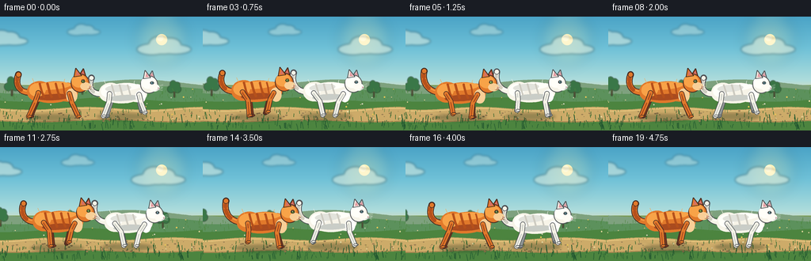
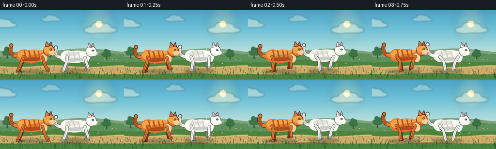
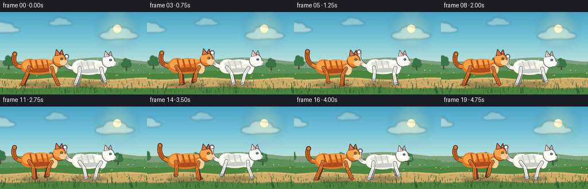
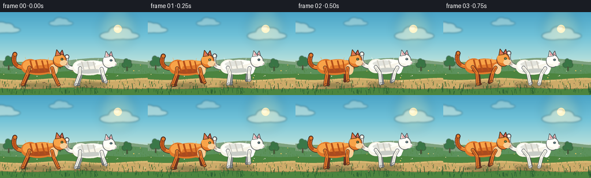

CODING AGENTS AS PIXEL WORLD MODELS
traex/DeepSeek-V4.1-Flash · instance_preservation_0004
点击播放 · 原生 RGB 像素
逐轮保存的候选
回放视频、检查图与代码变化。
每份候选均可单独播放。实际图片检查记录在下方工具轨迹中。
候选 01播放与检查图
点击播放 · 原生 RGB 像素


展开代码变化
--- 上一保存版本
+++ 本次保存版本
@@ -0,0 +1,532 @@
+"""Procedurally render two cats running through a sunny meadow."""
+
+from pathlib import Path
+import math
+import random
+
+import numpy as np
+from PIL import Image, ImageDraw, ImageFilter
+
+import artifact_io
+
+
+W, H, FPS, N = 256, 144, 4, 20
+SS = 4
+CW, CH = W * SS, H * SS
+
+
+def _mix(a, b, t):
+ return tuple(round(x + (y - x) * t) for x, y in zip(a, b))
+
+
+def _rgba(color, alpha=255):
+ return tuple(color) + (alpha,)
+
+
+def _pt(p):
+ return (p[0] * SS, p[1] * SS)
+
+
+def _pts(points):
+ return [_pt(p) for p in points]
+
+
+def _box(cx, cy, rx, ry):
+ return [(cx - rx) * SS, (cy - ry) * SS, (cx + rx) * SS, (cy + ry) * SS]
+
+
+def _ellipse(draw, cx, cy, rx, ry, fill, outline=None, width=1.0):
+ draw.ellipse(
+ _box(cx, cy, rx, ry),
+ fill=_rgba(fill) if len(fill) == 3 else fill,
+ outline=(_rgba(outline) if outline and len(outline) == 3 else outline),
+ width=max(1, round(width * SS)),
+ )
+
+
+def _poly(draw, points, fill, outline=None, width=1.0):
+ draw.polygon(_pts(points), fill=_rgba(fill) if len(fill) == 3 else fill)
+ if outline:
+ draw.line(
+ _pts(points + [points[0]]),
+ fill=_rgba(outline) if len(outline) == 3 else outline,
+ width=max(1, round(width * SS)),
+ joint="curve",
+ )
+
+
+def _line(draw, points, fill, width=1.0):
+ draw.line(
+ _pts(points),
+ fill=_rgba(fill) if len(fill) == 3 else fill,
+ width=max(1, round(width * SS)),
+ joint="curve",
+ )
+ if width >= 1.2:
+ r = width * 0.5
+ for x, y in (points[0], points[-1]):
+ _ellipse(draw, x, y, r, r, fill)
+
+
+def _ellipse_poly(cx, cy, rx, ry, angle=0.0, count=40):
+ a = math.radians(angle)
+ ca, sa = math.cos(a), math.sin(a)
+ points = []
+ for i in range(count):
+ t = 2.0 * math.pi * i / count
+ x, y = rx * math.cos(t), ry * math.sin(t)
+ points.append((cx + x * ca - y * sa, cy + x * sa + y * ca))
+ return points
+
+
+def _bezier(p0, p1, p2, p3, count=18):
+ out = []
+ for i in range(count):
+ t = i / (count - 1)
+ u = 1.0 - t
+ x = u**3 * p0[0] + 3 * u**2 * t * p1[0] + 3 * u * t**2 * p2[0] + t**3 * p3[0]
+ y = u**3 * p0[1] + 3 * u**2 * t * p1[1] + 3 * u * t**2 * p2[1] + t**3 * p3[1]
+ out.append((x, y))
+ return out
+
+
+def _soft_layer():
+ layer = Image.new("RGBA", (CW, CH), (0, 0, 0, 0))
+ return layer, ImageDraw.Draw(layer)
+
+
+def _composite(base, layer, blur=0.0):
+ if blur > 0:
+ layer = layer.filter(ImageFilter.GaussianBlur(blur * SS))
+ return Image.alpha_composite(base, layer)
+
+
+def _sky_image():
+ sky_stops = [
+ (0.00, (74, 163, 198)),
+ (0.28, (111, 193, 215)),
+ (0.56, (174, 220, 219)),
+ (0.70, (239, 220, 171)),
+ (0.76, (248, 213, 150)),
+ ]
+ grass_stops = [
+ (0.60, (124, 157, 87)),
+ (0.70, (103, 149, 74)),
+ (0.86, (72, 129, 59)),
+ (1.00, (43, 101, 52)),
+ ]
+ arr = np.zeros((CH, CW, 3), dtype=np.uint8)
+ for y in range(CH):
+ v = y / CH
+ if v < 0.72:
+ for i in range(len(sky_stops) - 1):
+ a, ca = sky_stops[i]
+ b, cb = sky_stops[i + 1]
+ if a <= v <= b:
+ color = _mix(ca, cb, (v - a) / (b - a))
+ break
+ else:
+ color = (77, 126, 57)
+ arr[y, :, :] = color
+
+ # A softer, brighter meadow band beneath the horizon.
+ for y in range(CH):
+ v = y / CH
+ if v >= grass_stops[0][0]:
+ for i in range(len(grass_stops) - 1):
+ a, ca = grass_stops[i]
+ b, cb = grass_stops[i + 1]
+ if a <= v <= b:
+ color = _mix(ca, cb, (v - a) / (b - a))
+ arr[y, :, :] = color
+ break
+ return Image.fromarray(arr, "RGB").convert("RGBA")
+
+
+SKY = _sky_image()
+
+
+def _ridge(y_base, amplitude, frequency, phase, color, bottom=H + 4):
+ points = []
+ for x in range(-8, W + 12, 3):
+ y = (
+ y_base
+ + math.sin((x + phase) * frequency) * amplitude
+ + math.sin((x * 0.53 + phase) * frequency * 1.9) * amplitude * 0.28
+ )
+ points.append((x, y))
+ points += [(W + 12, bottom), (-8, bottom)]
+ return points
+
+
+def _draw_cloud(layer, cx, cy, scale, alpha):
+ d = ImageDraw.Draw(layer)
+ white = (255, 250, 226, alpha)
+ shapes = [
+ (0, 0, 19, 7),
+ (-12, 2, 16, 6),
+ (13, 2, 17, 5),
+ (-3, -4, 12, 8),
+ (8, -3, 11, 7),
+ ]
+ for dx, dy, rx, ry in shapes:
+ d.ellipse(_box(cx + dx * scale, cy + dy * scale, rx * scale, ry * scale), fill=white)
+
+
+def _draw_tree(layer, x, ground, scale, tint):
+ d = ImageDraw.Draw(layer)
+ d.rectangle(
+ [round((x - 1.2 * scale) * SS), round((ground - 13 * scale) * SS),
+ round((x + 1.2 * scale) * SS), round((ground + 1) * SS)],
+ fill=(88, 79, 54, 255),
+ )
+ for dx, dy, rx, ry in [
+ (0, -18, 8, 8),
+ (-6, -14, 7, 7),
+ (6, -14, 7, 7),
+ (-2, -24, 6, 7),
+ (5, -22, 6, 6),
+ ]:
+ d.ellipse(
+ _box(x + dx * scale, ground + dy * scale, rx * scale, ry * scale),
+ fill=_rgba(tint),
+ )
+
+
+def _make_texture():
+ rng = random.Random(1917)
+ grass = []
+ for _ in range(310):
+ y = rng.uniform(90, 143)
+ depth = max(0.0, min(1.0, (y - 90) / 53))
+ grass.append(
+ (
+ rng.uniform(-4, W + 4),
+ y,
+ rng.uniform(1.8, 5.2) * (0.75 + depth * 0.55),
+ rng.uniform(-0.22, 0.18),
+ 0.25 + depth * 0.75,
+ )
+ )
+ pebbles = [
+ (rng.uniform(0, W), rng.uniform(119, 132), rng.uniform(0.4, 1.5), rng.uniform(0.25, 0.7))
+ for _ in range(55)
+ ]
+ flowers = [
+ (rng.uniform(0, W), rng.uniform(92, 138), rng.choice([(246, 238, 185), (247, 211, 94), (236, 241, 231)]), rng.uniform(0.45, 0.9))
+ for _ in range(24)
+ ]
+ return grass, pebbles, flowers
+
+
+GRASS, PEBBLES, FLOWERS = _make_texture()
+
+
+def _draw_background(frame):
+ img = SKY.copy()
+ d = ImageDraw.Draw(img)
+ pan = frame * 2.4
+
+ # Warm sun and haze.
+ glow, gd = _soft_layer()
+ for radius, alpha in [(34, 22), (25, 34), (16, 52), (9, 75)]:
+ gd.ellipse(_box(204, 29, radius, radius), fill=(255, 229, 144, alpha))
+ img = _composite(img, glow, blur=7.0)
+ d = ImageDraw.Draw(img)
+ _ellipse(d, 204, 29, 7.0, 7.0, (255, 244, 190))
+ _ellipse(d, 202.2, 27.1, 4.2, 4.0, (255, 251, 218))
+
+ # Long, low clouds move just enough to support the pan.
+ clouds, _ = _soft_layer()
+ for base_x, y, scale, alpha in [(45, 29, 1.0, 105), (145, 18, 0.72, 78), (246, 39, 1.18, 105)]:
+ x = (base_x - pan * 0.28) % (W + 80) - 40
+ _draw_cloud(clouds, x, y, scale, alpha)
+ img = _composite(img, clouds, blur=1.5)
+
+ # Distant blue-green hills.
+ d = ImageDraw.Draw(img)
+ _poly(
+ d,
+ _ridge(84, 3.5, 0.027, pan * 0.38, (0, 0, 0)),
+ (126, 161, 126),
+ )
+ _poly(
+ d,
+ _ridge(93, 4.0, 0.020, pan * 0.68 + 35, (0, 0, 0)),
+ (92, 145, 92),
+ )
+
+ # A handful of small trees create a readable middle distance.
+ trees, _ = _soft_layer()
+ for base_x, ground, scale, tint in [
+ (30, 99, 0.75, (58, 119, 72)),
+ (119, 97, 0.55, (67, 126, 78)),
+ (235, 101, 0.66, (57, 116, 69)),
+ ]:
+ x = (base_x - pan * 0.55) % (W + 30) - 15
+ _draw_tree(trees, x, ground, scale, tint)
+ img = _composite(img, trees, blur=0.55)
+
+ # Closer meadow and the running trail.
+ d = ImageDraw.Draw(img)
+ _poly(d, _ridge(105, 2.2, 0.032, pan * 1.05 + 10, (0, 0, 0)), (76, 132, 63))
+
+ top = []
+ bottom = []
+ for x in range(-5, W + 7, 3):
+ top.append((x, 116.0 + math.sin((x + pan * 1.4) * 0.043) * 1.8))
+ bottom.append((x, 132.2 + math.sin((x + pan * 1.1) * 0.035) * 1.5))
+ _poly(d, top + list(reversed(bottom)), (205, 171, 105))
+ _line(d, [(x, y + 1.8) for x, y in top], (231, 198, 126), 1.2)
+ _line(d, [(x, y - 0.8) for x, y in bottom], (157, 124, 73), 1.0)
+
+ # Grass blades and tiny flowers are drawn in depth order.
+ for base_x, y, height, lean, depth in GRASS:
+ x = (base_x - frame * (0.32 + depth * 1.65)) % (W + 8) - 4
+ sway = math.sin(frame * 0.9 + base_x * 0.1) * 0.35
+ if 116 < y < 133:
+ color = (80, 126, 61) if depth < 0.7 else (55, 104, 49)
+ else:
+ color = (75, 132, 61) if depth < 0.7 else (48, 104, 52)
+ _line(d, [(x, y), (x + lean + sway, y - height)], color, 0.38 + depth * 0.35)
+
+ for base_x, y, color, size in FLOWERS:
+ x = (base_x - frame * 0.8) % (W + 6) - 3
+ _line(d, [(x, y + 1), (x, y - 1.8)], (58, 112, 49), 0.35)
+ _ellipse(d, x, y - 2.1, size, size, color)
+ _ellipse(d, x, y - 2.1, size * 0.28, size * 0.28, (167, 119, 45))
+
+ for base_x, y, rx, alpha in PEBBLES:
+ x = (base_x - frame * 1.9) % (W + 4) - 2
+ _ellipse(d, x, y, rx, rx * 0.52, (153, 126, 83, round(70 + alpha * 80)))
+
+ return img
+
+
+def _tf_maker(x, y, scale, bob):
+ def tf(p):
+ return (x + p[0] * scale, y + p[1] * scale + bob)
+ return tf
+
+
+def _tp(tf, p):
+ return tf(p)
+
+
+def _cat_line(draw, tf, points, color, width):
+ _line(draw, [_tp(tf, p) for p in points], color, width)
+
+
+def _cat_poly(draw, tf, points, fill, outline=None, width=1.0):
+ _poly(draw, [_tp(tf, p) for p in points], fill, outline, width)
+
+
+def _cat_ellipse(draw, tf, cx, cy, rx, ry, fill, outline=None, width=1.0):
+ center = tf((cx, cy))
+ _ellipse(draw, center[0], center[1], rx * (tf((1, 0))[0] - tf((0, 0))[0]),
+ ry * (tf((0, 1))[1] - tf((0, 0))[1]), fill, outline, width)
+
+
+def _draw_tail(draw, tf, phase, base, shadow, outline, accent, white=False):
+ wave = math.sin(phase * math.tau)
+ p0 = (-24, -33)
+ p1 = (-39, -29 + wave * 2.2)
+ p2 = (-53, -39 + wave * 3.0)
+ p3 = (-47 + wave * 2.0, -57 + wave * 4.0)
+ pts = _bezier(p0, p1, p2, p3, 22)
+ world = [_tp(tf, p) for p in pts]
+ _line(draw, world, outline, 8.3)
+ _line(draw, world, base, 6.2)
+ _line(draw, [_tp(tf, (p[0], p[1] - 1.4)) for p in pts], shadow, 1.25)
+ for a, b in [(0.48, 0.57), (0.67, 0.76), (0.84, 0.92)]:
+ ia = round(a * (len(pts) - 1))
+ ib = round(b * (len(pts) - 1))
+ _line(draw, world[ia:ib + 1], accent, 4.0 if white else 4.6)
+ _cat_ellipse(draw, tf, p3[0], p3[1], 3.6, 3.6, base, outline, 0.7)
+
+
+def _leg_points(anchor, phase, stride, front):
+ theta = phase * math.tau
+ fx = anchor[0] + stride * math.cos(theta)
+ lift = max(0.0, math.sin(theta)) * (7.2 if front else 6.5)
+ fy = -0.4 - lift
+ dx, dy = fx - anchor[0], fy - anchor[1]
+ if front:
+ kx = anchor[0] + dx * 0.44 - 2.0 + math.sin(theta) * 1.0
+ ky = anchor[1] + dy * 0.43 - 1.2
+ else:
+ kx = anchor[0] + dx * 0.49 + 2.2 - math.sin(theta) * 1.2
+ ky = anchor[1] + dy * 0.42 - 1.8
+ return (anchor[0], anchor[1]), (kx, ky), (fx, fy)
+
+
+def _draw_leg(draw, tf, anchor, phase, stride, front, base, shade, outline, far=False):
+ a, k, f = _leg_points(anchor, phase, stride, front)
+ wa, wk, wf = _tp(tf, a), _tp(tf, k), _tp(tf, f)
+ w = 4.0 if far else 5.0
+ _line(draw, [wa, wk, wf], outline, w + 1.5)
+ _line(draw, [wa, wk, wf], shade if far else base, w)
+ if not far:
+ _line(draw, [_tp(tf, (a[0], a[1] + 1)), _tp(tf, (k[0], k[1] + 0.7)), _tp(tf, (f[0], f[1] - 0.4))],
+ shade, 1.2)
+ _cat_ellipse(draw, tf, f[0] + 1.1, f[1] + 0.1, 3.2, 1.7, base if not far else shade, outline, 0.65)
+ _cat_ellipse(draw, tf, k[0], k[1], 1.9, 1.9, shade if far else base)
+
+
+def _draw_cat(img, x, ground, scale, phase, kind):
+ d = ImageDraw.Draw(img)
+ bob = math.sin(phase * math.tau * 2.0) * 1.15
+ tf = _tf_maker(x, ground, scale, bob)
+
+ if kind == "orange":
+ base = (225, 121, 43)
+ light = (248, 163, 72)
+ shade = (169, 75, 31)
+ deep = (116, 54, 30)
+ outline = (70, 43, 34)
+ accent = (181, 80, 27)
+ muzzle = (248, 207, 151)
+ eye = (151, 205, 76)
+ inner_ear = (213, 112, 103)
+ whisker = (245, 219, 179)
+ else:
+ base = (247, 244, 232)
+ light = (255, 255, 249)
+ shade = (201, 205, 199)
+ deep = (145, 151, 150)
+ outline = (79, 83, 87)
+ accent = (205, 203, 193)
+ muzzle = (255, 252, 244)
+ eye = (117, 184, 211)
+ inner_ear = (228, 156, 163)
+ whisker = (255, 255, 249)
+
+ far_base = shade
+ far_shade = deep
+
+ # Legs behind the body, then tail, then the overlapping body silhouette.
+ _draw_leg(d, tf, (-18, -31), phase + 0.54, 12.0, False, far_base, far_shade, outline, far=True)
+ _draw_leg(d, tf, (20, -30), phase + 0.06, 11.0, True, far_base, far_shade, outline, far=True)
+ _draw_tail(d, tf, phase + 0.08, base, light, outline, accent, white=(kind == "white"))
+
+ body_shapes = [
+ _ellipse_poly(0, -32, 30, 14.2, -4),
+ _ellipse_poly(-19, -33, 15.8, 13.6, -7),
+ _ellipse_poly(18, -32, 14.2, 12.6, -2),
+ ]
+ for shape in body_shapes:
+ _cat_poly(d, tf, shape, outline)
+ for shape in body_shapes:
+ _cat_poly(d, tf, shape, base)
+
+ _cat_poly(d, tf, _ellipse_poly(-2, -40.1, 25, 5.0, -4), light)
+ _cat_poly(d, tf, _ellipse_poly(0, -25.4, 22, 4.2, -3), shade)
+ _cat_poly(d, tf, _ellipse_poly(-21, -35, 11, 9, -7), light)
+
+ if kind == "orange":
+ for x0, x1, width in [(-18, -15, 2.8), (-8, -5, 3.1), (3, 6, 2.7), (12, 14, 2.1)]:
+ _cat_line(d, tf, [(x0, -43.0), (x0 + 1.5, -37.0), (x1, -31.5), (x1 + 2.5, -25.8)],
+ accent, width)
+ _cat_poly(d, tf, _ellipse_poly(24, -27.5, 7.3, 9.4, -5), muzzle)
+ else:
+ # Quiet, cool-gray tabby markings keep the cat unmistakably white.
+ _cat_poly(d, tf, _ellipse_poly(-8, -38.8, 18, 5.0, -4), (226, 227, 220))
+ for x0, x1, width in [(-17, -15, 2.0), (-6, -4, 2.2), (5, 7, 2.0)]:
+ _cat_line(d, tf, [(x0, -43), (x1, -36), (x1 + 2, -29)], accent, width)
+ _cat_poly(d, tf, _ellipse_poly(23, -27.2, 7.0, 9.0, -5), (255, 255, 251))
+
+ # Near legs run on the opposite half of the gait.
+ _draw_leg(d, tf, (-20, -31), phase + 0.50, 12.5, False, base, shade, outline)
+ _draw_leg(d, tf, (21, -30), phase, 11.5, True, base, shade, outline)
+
+ # Far ear, head, near ear.
+ _cat_poly(d, tf, [(32, -51), (39.5, -63.2), (43.0, -51.0)], shade, outline, 0.9)
+ _cat_poly(d, tf, [(34.2, -53), (39.2, -60.2), (41.4, -52.7)], inner_ear)
+
+ _cat_ellipse(d, tf, 35, -44.0, 12.2, 12.3, base, outline, 1.0)
+ _cat_ellipse(d, tf, 33.5, -46.6, 9.7, 8.4, light)
+ _cat_ellipse(d, tf, 42.2, -39.6, 7.0, 5.2, muzzle)
+
+ _cat_poly(d, tf, [(27.0, -52.0), (29.2, -63.7), (37.0, -53.5)], base, outline, 0.9)
+ _cat_poly(d, tf, [(29.7, -54.5), (30.9, -60.3), (34.5, -54.4)], inner_ear)
+
+ # Eye, nose, mouth, and whiskers.
+ _cat_ellipse(d, tf, 39.0, -46.2, 2.5, 2.0, (44, 43, 37))
+ _cat_ellipse(d, tf, 39.2, -46.2, 1.35, 1.35, eye)
+ _cat_ellipse(d, tf, 39.4, -46.4, 0.62, 0.95, (22, 25, 22))
+ _cat_ellipse(d, tf, 38.9, -46.8, 0.35, 0.35, (255, 255, 243))
+ _cat_line(d, tf, [(36.7, -48.3), (39.2, -49.0), (41.1, -48.2)], shade, 0.7)
+ _cat_poly(d, tf, [(47.1, -40.0), (50.0, -39.1), (47.2, -37.7)], (215, 108, 116), outline, 0.35)
+ _cat_line(d, tf, [(47.2, -37.8), (45.9, -35.8), (44.3, -36.1)], deep, 0.55)
+ _cat_line(d, tf, [(47.2, -37.6), (48.5, -35.8), (50.0, -36.3)], deep, 0.55)
+ for dy in (-2.2, 0.0, 2.2):
+ _cat_line(d, tf, [(44.6, -39.4 + dy * 0.4), (54.2, -42.0 + dy)], whisker, 0.34)
+ _cat_line(d, tf, [(44.6, -38.8 + dy * 0.3), (53.3, -37.4 + dy * 0.9)], whisker, 0.30)
+
+ # A few loose hairs sharpen the silhouette without adding visual noise.
+ _cat_line(d, tf, [(-24, -43), (-26.5, -47), (-27.6, -50)], light if kind == "orange" else base, 0.55)
+ _cat_line(d, tf, [(15, -43.5), (14.2, -47), (15.0, -49.2)], light, 0.45)
+
+
+def _draw_ground_effects(img, frame, cats):
+ shadow, sd = _soft_layer()
+ for x, ground, scale, _phase in cats:
+ sd.ellipse(
+ _box(x - 2, ground + 1.6, 35 * scale, 4.6 * scale),
+ fill=(43, 60, 35, 86),
+ )
+ img = _composite(img, shadow, blur=1.7)
+
+ dust, dd = _soft_layer()
+ for index, (x, ground, scale, phase) in enumerate(cats):
+ for i in range(4):
+ age = (phase * 1.35 + i / 4.0) % 1.0
+ px = x - (22 + age * 31) * scale
+ py = ground - 0.8 - age * 4.5
+ radius = (1.5 + age * 5.4) * scale
+ alpha = round(48 * (1.0 - age) ** 1.3)
+ dd.ellipse(_box(px, py, radius * 1.45, radius), fill=(219, 193, 139, alpha))
+ img = _composite(img, dust, blur=1.35)
+ return img
+
+
+def _foreground(img, frame):
+ d = ImageDraw.Draw(img)
+ rng = random.Random(772)
+ for i in range(34):
+ base_x = rng.uniform(0, W)
+ x = (base_x - frame * 3.2) % (W + 12) - 6
+ y = rng.uniform(134, 144)
+ height = rng.uniform(4, 12)
+ lean = rng.uniform(-2.4, 2.0)
+ color = (34, 86, 47) if i % 3 else (47, 103, 53)
+ _line(d, [(x, y), (x + lean * 0.45, y - height * 0.55), (x + lean, y - height)], color, 0.9)
+ return img
+
+
+def render_frame(frame):
+ img = _draw_background(frame)
+ white_x = 156.5 + frame * 0.62
+ orange_x = 67.5 + frame * 0.62
+ white_phase = frame / 8.0 + 0.13
+ orange_phase = frame / 8.0
+
+ cats = [
+ (white_x, 124.8, 0.91, white_phase),
+ (orange_x, 126.2, 0.96, orange_phase),
+ ]
+ img = _draw_ground_effects(img, frame, cats)
+ _draw_cat(img, white_x, 124.8, 0.91, white_phase, "white")
+ _draw_cat(img, orange_x, 126.2, 0.96, orange_phase, "orange")
+ img = _foreground(img, frame)
+ return np.asarray(img.convert("RGB").resize((W, H), Image.Resampling.LANCZOS), dtype=np.uint8)
+
+
+def main():
+ frames = np.stack([render_frame(i) for i in range(N)])
+ artifact_io.save(frames, Path(__file__).resolve().parent)
+ print(f"rendered {N} frames at {W}x{H}, {FPS} fps")
+
+
+if __name__ == "__main__":
+ main()
候选 02播放与检查图
点击播放 · 原生 RGB 像素


展开代码变化
--- 上一保存版本
+++ 本次保存版本
@@ -506,8 +506,9 @@
def render_frame(frame):
img = _draw_background(frame)
- white_x = 156.5 + frame * 0.62
- orange_x = 67.5 + frame * 0.62
+ # They hold their formation while the meadow scrolls behind them.
+ white_x = 157.0 + math.sin(frame * math.tau / N) * 0.55
+ orange_x = 70.0 + math.sin(frame * math.tau / N) * 0.45
white_phase = frame / 8.0 + 0.13
orange_phase = frame / 8.0
可观测工具轨迹
实际执行的命令与返回图片。
命令 1exit 0
/bin/bash -c "pwd && rg --files -g 'prompt.txt' -g 'GENERATION_RULES.md' -g 'task_spec.json' -g '"'!**/.git/**'"'"
命令 2exit 0
/bin/bash -c 'ls -la'
命令 3exit 0
/bin/bash -c 'cat GENERATION_RULES.md'
命令 4exit 0
/bin/bash -c 'cat prompt.txt'
命令 5exit 0
/bin/bash -c 'cat task_spec.json'
命令 6exit 0
/bin/bash -c "sed -n '1,240p' artifact_io.py"
命令 7exit 1
/bin/bash -c 'python generate.py'
命令 8exit 0
/bin/bash -c 'python generate.py'
命令 9exit 127
/bin/bash -c 'ls -lh inspection.png transition_check.png pixels.npz frames/00.png index.html && file inspection.png frames/00.png'
命令 10exit 0
/bin/bash -c 'command -v chafa || command -v viu || command -v jp2 || command -v img2txt || true'
命令 11exit 0
/bin/bash -c "python - <<'PY'
from PIL import Image
import numpy as np
im=np.array(Image.open('frames/00.png'))
# crop 0:256, 55:140, classify rough: orange O, white W, dark K, green g, tan t, sky s
for y in range(55,140,2):
row=[]
for x in range(0,256,2):
r,g,b=im[y:y+2,x:x+2].mean((0,1))
if r>180 and 70<g<190 and b<115 and r>g*1.25: c='O'
elif r>205 and g>205 and b>195: c='W'
elif r<105 and g<100 and b<100: c='#'
elif g>r*1.12 and g>b*1.05: c='.'
elif r>170 and g>130 and b<130: c='t'
elif b>g and g>r: c=' '
elif r>g*1.25 and g>b*1.1: c='o'
else: c=','
row.append(c)
print(''.join(row))
PY"命令 12exit 0
/bin/bash -c "python - <<'PY'
from pathlib import Path
import numpy as np
from PIL import Image
frames=np.stack([np.array(Image.open(p)) for p in sorted(Path('frames').glob('*.png'))])
print('shape/dtype:', frames.shape, frames.dtype)
print('rgb min/max/mean:', frames.min(), frames.max(), frames.mean(axis=(0,1,2)).round(1))
print('unique colors/frame:', [len(np.unique(f.reshape(-1,3),axis=0)) for f in frames])
print('mean abs delta:', np.abs(frames[1:].astype(int)-frames[:-1].astype(int)).mean(axis=(1,2,3)).round(2))
# Approximate orange and white cat extents below the horizon.
for i in [0,4,8,12,16,19]:
f=frames[i]
r,g,b=f[:,:,0],f[:,:,1],f[:,:,2]
orange=(r>175)&(g>55)&(g<180)&(b<110)&(r>g*1.3)
white=(r>220)&(g>220)&(b>205)&(np.indices(r.shape)[0]>65)&(np.indices(r.shape)[0]<130)
for name,m in [('orange',orange),('white',white)]:
yy,xx=np.where(m)
print(i,name,(int(xx.min()),int(yy.min()),int(xx.max()),int(yy.max())),len(xx))
PY"命令 13exit 0
/bin/bash -c 'rg -n "cat|orange|white|render_frame|_draw_cat|_draw_ground" generate.py | head -40'
命令 14exit 0
/bin/bash -c "sed -n '200,315p' generate.py && sed -n '460,535p' generate.py"
命令 15exit 0
/bin/bash -c "python - <<'PY'
from PIL import Image
import numpy as np
im=np.array(Image.open('frames/00.png'))
for name,(x0,x1) in [('ORANGE',(35,125)),('WHITE',(120,220))]:
print('\\n'+name)
crop=im[58:136,x0:x1]
# 2x2 blocks
for y in range(0,crop.shape[0],2):
s=''
for x in range(0,crop.shape[1],2):
p=crop[y:y+2,x:x+2].mean((0,1)); r,g,b=p
if r>185 and 60<g<185 and b<115 and r>g*1.25: c='O'
elif r>220 and g>220 and b>205: c='W'
elif r<105 and g<105 and b<105: c='#'
elif r>180 and g>140 and b<140: c='o'
elif b>r*1.05: c=' '
elif g>r*1.08: c='.'
else: c=','
s+=c
print(s.rstrip())
PY"命令 16exit 0
/bin/bash -c "command -v ffmpeg || true; python - <<'PY' mods=['imageio','imageio_ffmpeg','cv2','av'] for m in mods: try: x=__import__(m); print(m,'ok',getattr(x,'__version__','')) except Exception as e: print(m,'no') PY"
命令 17exit 0
/bin/bash -c "python - <<'PY'
import cv2, numpy as np
from pathlib import Path
from PIL import Image
frames=[np.array(Image.open(p)) for p in sorted(Path('frames').glob('*.png'))]
# Upscale with nearest to preserve the authored pixel look; duplicate each 4fps frame
# to 16fps for a smoother in-browser-style preview.
out=cv2.VideoWriter('.tmp/preview.mp4', cv2.VideoWriter_fourcc(*'mp4v'), 16, (256,144))
for f in frames:
for _ in range(4):
out.write(cv2.cvtColor(f, cv2.COLOR_RGB2BGR))
out.release()
print(Path('.tmp/preview.mp4').stat().st_size)
PY"命令 18exit 0
/bin/bash -c 'python generate.py'
命令 19exit 0
/bin/bash -c "python - <<'PY'
from pathlib import Path
import numpy as np
from PIL import Image
frames=np.stack([np.array(Image.open(p)) for p in sorted(Path('frames').glob('*.png'))])
r,g,b=frames[:,:,:,0],frames[:,:,:,1],frames[:,:,:,2]
orange=(r>175)&(g>55)&(g<180)&(b<110)&(r>g*1.3)
white=(r>220)&(g>220)&(b>205)
y=np.indices((144,256))[0][None,:,:]
# Restrict object color masks to the cat lane to ignore sky and flower pixels.
orange &= (y>65)&(y<133)
white &= (y>65)&(y<130)
for name,m in [('orange',orange),('white',white)]:
print(name,'pixels range',m.sum(axis=(1,2)).min(),m.sum(axis=(1,2)).max())
for i in [0,4,8,12,16,19]:
yy,xx=np.where(m[i])
print(i,(int(xx.min()),int(yy.min()),int(xx.max()),int(yy.max())))
print('frame delta min/max',np.abs(frames[1:].astype(int)-frames[:-1].astype(int)).mean(axis=(1,2,3)).min().round(2),np.abs(frames[1:].astype(int)-frames[:-1].astype(int)).mean(axis=(1,2,3)).max().round(2))
print('artifact sizes',Path('pixels.npz').stat().st_size,Path('index.html').stat().st_size)
PY"命令 20exit 0
/bin/bash -c "python - <<'PY'
from PIL import Image
import numpy as np
im=np.array(Image.open('frames/12.png'))
# Locate bright-white connected-ish regions in lower 130 pixels using a coarse row projection.
r,g,b=im[:,:,0],im[:,:,1],im[:,:,2]
m=(r>220)&(g>220)&(b>205)
for y in range(60,131):
xs=np.flatnonzero(m[y])
if len(xs): print(y, xs.min(),xs.max(),len(xs))
PY"命令 21exit 0
/bin/bash -c "sed -n '1,260p' player_template.html"
命令 22exit 0
/bin/bash -c "python - <<'PY'
from PIL import Image
im=Image.open('inspection.png')
print(im.size)
# Resize only for a compact review copy; source artifacts remain untouched.
im.resize((768, 330), Image.Resampling.NEAREST).save('.tmp/inspection_small.png')
PY"命令 23exit 0
/bin/bash -c "python - <<'PY'
from pathlib import Path
import numpy as np
from PIL import Image
frames=np.stack([np.array(Image.open(p)) for p in sorted(Path('frames').glob('*.png'))])
for i in [0,4,8,12,16,19]:
f=frames[i]; r,g,b=f[:,:,0],f[:,:,1],f[:,:,2]
yy,xx=np.indices(r.shape)
om=(r>175)&(g>55)&(g<180)&(b<110)&(r>g*1.3)&(xx>20)&(xx<135)&(yy>60)&(yy<134)
wm=(r>220)&(g>220)&(b>205)&(xx>100)&(xx<220)&(yy>60)&(yy<130)
for name,m in [('orange',om),('white',wm)]:
ys,xs=np.where(m)
print(f'{i:02d} {name:6s} bbox={xs.min():3d},{ys.min():3d}..{xs.max():3d},{ys.max():3d} n={len(xs)}')
PY"命令 24exit 0
/bin/bash -c "python -m py_compile generate.py && python - <<'PY'
import json
from pathlib import Path
import numpy as np
from PIL import Image
spec=json.loads(Path('task_spec.json').read_text())
files=sorted(Path('frames').glob('*.png'))
assert len(files)==spec['frames']==20
for p in files:
im=Image.open(p)
assert im.size==(spec['width'],spec['height']) and im.mode=='RGB'
z=np.load('pixels.npz')['pixels']
assert z.shape==(144,256,20) and z.dtype==np.uint32
assert Path('index.html').is_file() and Path('inspection.png').is_file() and Path('transition_check.png').is_file()
print('verified',len(files),'frames',z.shape,'first/last frame deltas',int(np.count_nonzero(z[:,:,0]"'!=z[:,:,1])),int(np.count_nonzero(z[:,:,18]!=z[:,:,19])))
PY'命令 25exit 0
/bin/bash -c "python - <<'PY'
from pathlib import Path
import json
from PIL import Image
# Check that all frame hashes differ and the player payload matches all saved frames.
hashes=[]
for p in sorted(Path('frames').glob('*.png')):
import hashlib
hashes.append(hashlib.sha256(p.read_bytes()).hexdigest())
print('unique frame hashes:',len(set(hashes)),'of',len(hashes))
print('index payload MB:',round(Path('index.html').stat().st_size/1e6,2))
print('inspection size:',Image.open('inspection.png').size)
PY"命令 26exit 0
/bin/bash -c "python - <<'PY'
from pathlib import Path
from PIL import Image, ImageDraw
# Compact visual proof of motion: select a sequence across the 5-second clip.
files=sorted(Path('frames').glob('*.png'))
indices=[0,3,6,9,12,15,18,19]
ims=[Image.open(files[i]).convert('RGB') for i in indices]
w,h=256,144
out=Image.new('RGB',(w*4,h*2),(18,22,24))
d=ImageDraw.Draw(out)
for j,(idx,im) in enumerate(zip(indices,ims)):
x=(j%4)*w; y=(j//4)*h
out.paste(im,(x,y)); d.text((x+4,y+3),f'{idx/4:.2f}s',fill=(255,255,255))
out.save('.tmp/sequence_check.png')
PY"命令 27exit 0
/bin/bash -c "python - <<'PY'
from pathlib import Path
from PIL import Image
import numpy as np
frames=[np.array(Image.open(p)) for p in sorted(Path('frames').glob('*.png'))]
# Measure visual occupancy and ensure no clipping at the top, bottom, or right edge.
allpx=np.stack(frames)
edge_top=allpx[:,0:2].std(axis=(1,2,3)).max()
edge_right=allpx[:,:,-2:].std(axis=(1,2,3)).max()
print('edge variation top/right:',round(float(edge_top),2),round(float(edge_right),2))
print('frame mean luminance range:',round(float(allpx.mean(axis=(1,2,3)).min()),2),round(float(allpx.mean(axis=(1,2,3)).max()),2))
print('bytes:',sum(p.stat().st_size for p in Path('.').glob('frames/*.png')))
PY"命令 28exit 0
/bin/bash -c "python - <<'PY'
from pathlib import Path
from PIL import Image, ImageChops
import numpy as np
# Check motion is distributed across body, legs, and background rather than a static image.
frames=[Image.open(p).convert('RGB') for p in sorted(Path('frames').glob('*.png'))]
regions={'cats':(18,62,212,133),'legs':(20,105,205,135),'background':(0,0,256,95)}
for name,box in regions.items():
a=np.array(frames[0].crop(box)); b=np.array(frames[10].crop(box))
print(name,'mean change frame0->10',round(float(np.abs(a.astype(int)-b.astype(int)).mean()),2))
PY"命令 29exit 0
/bin/bash -c 'git status --short 2>/dev/null || true'
保存候选 2 份；完成命令 29 次；可验证图片返回 0 张。原始 API 响应与完整日志保留在本地。